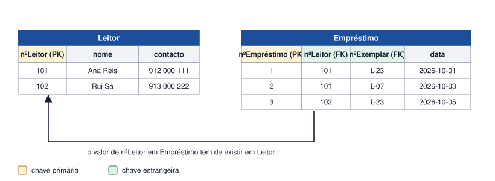

Tema 15 · Modelação de dados
Chaves estrangeiras
Chaves estrangeiras e relacionamentos entre tabelas
A chave estrangeira é a coluna (ou conjunto de colunas) de uma tabela que referencia a chave primária de outra. É assim que as tabelas se ligam e que os relacionamentos do DER chegam à base de dados.

Regras
- O valor de uma chave estrangeira tem de existir na chave primária referenciada, ou então ser nulo (se a participação for opcional).
- A chave estrangeira fica sempre no lado N de um relacionamento 1:N.
- Num N:M, a tabela associativa tem duas chaves estrangeiras.
- A chave estrangeira pode repetir-se: vários empréstimos podem ser do mesmo leitor.
Em SQL
CREATE TABLE Empréstimo ( nºEmpréstimo INT PRIMARY KEY, nºLeitor INT NOT NULL, nºExemplar INT NOT NULL, dataEmpréstimo DATE NOT NULL, FOREIGN KEY (nºLeitor) REFERENCES Leitor(nºLeitor), FOREIGN KEY (nºExemplar) REFERENCES Exemplar(nºExemplar) );
Atividade
Criar relações entre tabelas e identificar as respetivas chaves estrangeiras
Considere as tabelas:
Turma(códigoTurma, ano, curso) Aluno(nºAluno, nome, dataNascimento) Disciplina(códigoDisciplina, designação) Inscrição(nºAluno, códigoDisciplina, nota)
- Cada aluno pertence a uma turma. Acrescente a coluna necessária e indique a chave estrangeira.
- Identifique as chaves estrangeiras da tabela Inscrição e as tabelas que referenciam.
- Escreva a definição em SQL das chaves estrangeiras da tabela Inscrição.
Ver proposta de resolução
Aluno(nºAluno, nome, dataNascimento, #códigoTurma)
- 1. códigoTurma em Aluno é chave estrangeira e referencia Turma(códigoTurma).
- 2. Em Inscrição: nºAluno → Aluno(nºAluno) e códigoDisciplina → Disciplina(códigoDisciplina). Ambas fazem também parte da chave primária composta.
CREATE TABLE Inscrição ( nºAluno INT, códigoDisciplina INT, nota DECIMAL(4,1), PRIMARY KEY (nºAluno, códigoDisciplina), FOREIGN KEY (nºAluno) REFERENCES Aluno(nºAluno), FOREIGN KEY (códigoDisciplina) REFERENCES Disciplina(códigoDisciplina) );
Em resumo
- A chave estrangeira referencia a chave primária de outra tabela.
- Nos relacionamentos 1:N fica no lado N; nos N:M, na tabela associativa.
- Só pode tomar valores que existam na tabela referenciada (ou nulo, se for opcional).